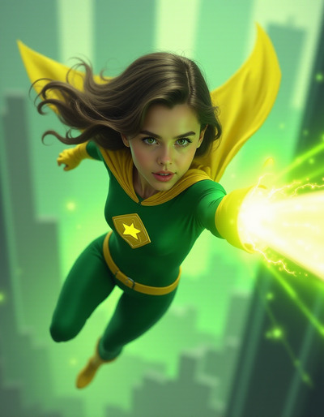

Talents¶
{kind=link}
Talents represent intrinsic parts of a character such as skills, aptitudes, inherent powers, etc. By their nature, these abilities can’t normally be taken away, even temporarily without significantly scrambling the Hero or Creation.
Each Talent is unique and free form, there is no finite pre-written list, only samples of possible Talents. Ideally they should be the same sort of pithy phrase as the Hero’s High Concept.
As the tier increases, the Talents becomes increasingly narrow. Higher tier Talents require related lower tier Talents, and are usually a specialization of that lower tier Talent.
The Hero’s High Concept is a free tier 1 Talent.
Broad Talent¶
Tier: 1
Cost: 3xp
Requirements: None
Tier 1 talents are shockingly broad covering entire contexts. Professions, areas of study or entire hobbies are appropriate Broad Talents. Talents that represent what the Hero is often fit into the Broad Talent category. Access to Metaphysics are often unlocked via a Broad Talent.
Due to their breadth, sometimes the Broad Talents that first come to mind are short, only a word or two, but consider adding more color to them. A Broad Talent such as Fighting could be chosen, but Soldier in the Atlantean Armed Forces could be used in all the ways Fighting could be used as well some other ways related to Atlantis, Atlantis Armed Forces, being a soldier, etc. It also opens up tier 2 Talents associated to those things that Fighting wouldn’t be able to.
Sample Broad Talents
|
|
Common Talent¶
Tier: 2
Cost: 3xp
Requirements: Related tier 1 Talent
Common Talents are narrower than Broad Talents,
representing a more specialized skill.
A Hero with a Professor of Sciences Broad Talent
might narrow their field to a specific science, while
someone with some sort of Fighting related Talent might
focus on specific weapons or techniques at this tier.
Common Talents are generally applicable to a major field of study, generally a player does not have to work too hard for them to apply to a Strategy. Every Common Talent requires a parent Broad Talent that’s at least related if not clearly a superset.
Sample Common Talents
|
|
Master Talent¶
Tier: 3
Cost: 3xp
Requirements: Related tier 2 Talent, GM discussion
Master Talents are like a PhD thesis, they are about knowing more and more about less and less.
While Broad Talents almost always apply to a situation, and Common Talents take little work to make apply, Master Talents generally require the Hero take some effort to get them to apply to any given situation.
In order to be a master talent, the Hero’s player will have to take actions to make it applicable, rather than the GM having to take action make it inapplicable.
These Talents are laser focused on one specific thing. Combat maneuvers generally require specific conditions to apply, such as when fighting multiple foes, or only after having taken a Consequence.
In order for a Hero to choose a Master Talent the player must consult with the GM or the table at large, so everyone agrees on the focus and limitations on the Talent. Heroes can not start with Master Talents.
Sample Master Talents
|
|